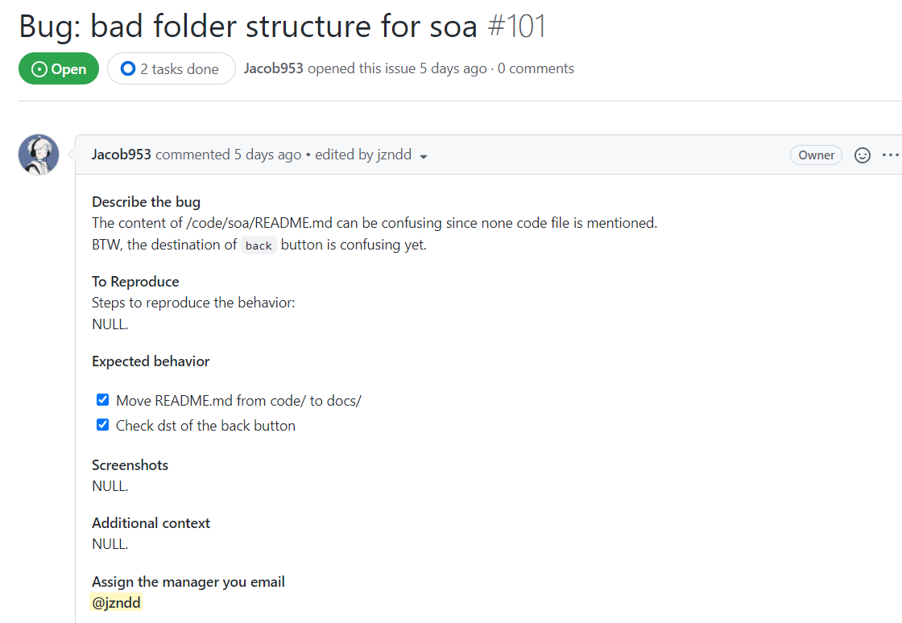
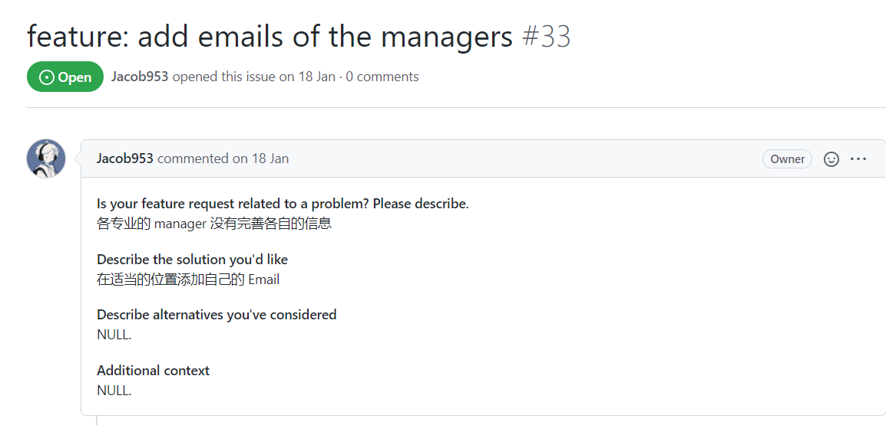
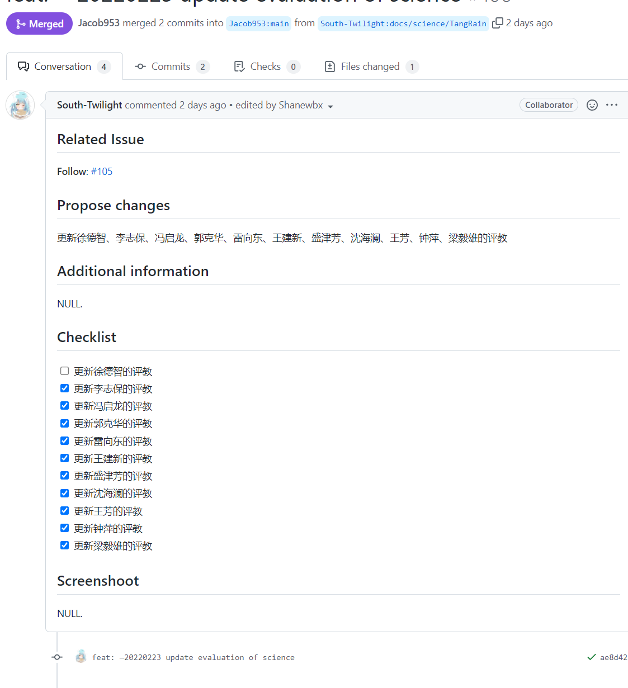

贡献指南
请确保你已经仔细阅读了本指南，在工作流程清晰后再进行操作!
我们欢迎任何形式的贡献，包括但不限于下列:
- 提出或申请并修正任何 EvalCSU 的内容错误
- 提出任何关于 EvalCSU 的疑惑和建议
- 申请优化或新增课堂笔记、考点思维导图或实验课设
- 申请参与课程、实验或老师的评教
- 申请参与校级、院级或专业级经验分享
- 将已有的内容翻译成其他语言
若你是我们的协作者，请务必遵循 Collaborator 的要求
若本指南有任何模糊不清的地方，请通过 Issue 和我们反映
为 EvalCSU 贡献
为了便于指导小白操作，我们将根据 GitHub 的操作模块进行详细指导
尽管如此，我们还是建议你多参考已有的 Issue 或者 PR
若你不是小白，可以参考一下几点： 1. 提交错误或建议等，请参考 Bug report 模版 2. 提交评教或分享经验等，请参考 Evaluate request 模版 3. 提交课设、笔记或作业等，请参考 Feature request 模版
Issue 模块
Issue 是一种非常好的可沉淀的交流方式，能帮助 EvalCSU 实现答疑交流、反馈缺陷和提出新需求，欢迎你通过 Issue 与我们交流
提出新的 Issue 之前，请你检查 Open 和 Closed 中是否存在相似 Issue： - 若 Open 中存在，且无法解决你的疑惑，请在该 Issue 下提出你的问题 - 若 Closed 中存在，但依然无法解决你的疑惑，可以重新新增一个 Issue - 若都不存在，则在新增你的 Issue
新增 Issue
- 进入 Issue 页面点击
New issue按钮

Figure 1. New issue 的按钮位置
- 选择
Bug report,Evaluate request,Feature request或新建一个空白模版来初始化你的 Issue - Bug report：指出 EvalCSU 中存在的内容错误，并提出修正建议，详细请参考 Bug report 模版
- Evaluate request：向 Manager 提交评教、经验分享的申请，详细请参考 Evaluate request 模版
- Feature request：向 Manager 提交课堂笔记、考点思维导图或实验课设的优化或新增的申请，详细请参考 Feature request 模版
- 在禁止删除 题目（加粗字体） 的前提下，简述你的 Issue 内容，面对无法填写的部分，请以
NULL.代替内容，而非删除题目 - 修改标题中的
<description>部分，建议参考已有 Issue - 点击
Submit new issue按钮提交你的 Issue
Bug report 模版
仔细阅读 题目（加粗字体） ，尽可能保证 Bug 描述的简洁性和准确性
- 在 Describe the bug 中简述 bug 的位置、影响以及可能带来的后果
- 如果需要特殊步骤，在 To Reproduce 中描述复现 bug 的步骤
- 如果不需要，则用
NULL.代替 - 在 Expected behavior 中简述你的解决方案或者你期待的效果
- 为了使得描述更加具体，建议在 Screenshots 中贴上你的截图
- 如果没有，则用
NULL.代替 - 如果有其他内容，则在 Additional context 中简述
- 如果无其他内容， 填
NULL. - 在 Assign the manager you email 中 @ 负责 bug 所在区域的管理员

Figure 2. Bug issue 的按钮位置
特别注意
- 通常情况下，Bug report 模版不需要 Email 管理员
- Bug report 模版中，你可以申请参与：
- 修正拼写、词语错误
- 修正课堂笔记错误
- 修正考点思维导图错误（考点更新不纳入修正范围）
- 修正实验课设错误
- 提出你的建议、疑惑
- 待管理员在该 Issue 下批准，便可移步 Pull Request 模块 进行下一步操作。
Evaluate request 模版
- 在提交 Issue 前，请到你所在的学院查询 管理员 表格
- 若不存在对应学院，请重新申请 Feature request
- 若存在对应学院，请 Email 当前年级相近的管理员
- 在 Describe the evaluation you want to join 中简述你希望参与的内容，务必包含年级、学院和模块（评教或经验分享）
- 在 Assign the manager you email 中：
- 如果未获得评教、经验分享资格，@ 所发邮件的管理员
- 如果已获得评教、经验分享资格，填
NULL.
特别注意
- Evaluate request 模版中，你可以申请参与：
- 新增多个课程评教
- 新增多级经验分享
- 为了保护贡献者的隐私，Issue 和邮件中严禁出现个人信息
- 填写邮件内容时，请前往
CSU 教务系统->培养管理->我的培养方案，邮件内容附加全屏截图即可，建议包含系统时间 - 待管理员在该 Issue 下批准，便可移步 Pull Request 模块 进行下一步操作。
Feature request 模版
- 在提交 Issue 前，请到你所在的学院查询 管理员 表格
- 若不存在对应学院，请优先 Email 一级 Reviewer(Rick Lin、jzndd)，同时在该 Issue 中申请添加对应学院
- 若存在对应学院，请 Email 当前年级相近的管理员
- 在 Is your feature request related to a problem? Please describe. 中简述你希望参与的内容，务必包含年级、学院和模块（课堂笔记、考点思维导图或实验课设）
- 在 Describe the solution you'd like 中简述你的最优想法
- 如果有代替方案，则在 Describe alternatives you've considered 中简述
- 如果无代替方案， 填
NULL. - 如果有其他内容，则在 Additional context 中简述
- 如果无其他内容， 填
NULL. - 无论是否有相应资格，都需要在 Assign the manager you email 中 @ 所发邮件的管理员

Figure 3. 优秀的 feature request 案例
特别注意
- Feature request 模版中，你可以申请参与且不止于：
- 优化或新增多个课堂笔记
- 优化或新增多个考点思维导图
- 优化或新增多个实验课设
- 新增新的学院、专业
- 将已有内容翻译为其他语言
- 为了保护贡献者的隐私，Issue 和邮件中严禁出现个人信息
- 填写邮件内容时，请前往
CSU 教务系统->培养管理->我的培养方案，邮件内容附加全屏截图即可，建议包含系统时间 - 待管理员在该 Issue 下批准，便可移步 Pull Request 模块 进行下一步操作。
Pull Request 模块
PR 即将你的贡献合并、发布到主仓库中
任何 PR 都需要链接到已存在，并且已授权的 Issue
因此，在提交 PR 前，建议你优先阅读 Issue 模块
Pull Request 准备工作
可以参考 Git 新手指南
fork主仓库到你的 GitHub 仓库中，并git clone个人仓库到本地

Figure 4. fork 按钮位置
- 在本地新建一个分支
-
分支命名规则：
<type>/[faculty]/<your github id>/ // e.g. docs/security/jacob953- git 命令示例：

Figure 5. 新建分支的命令样例
-<type>建议参考 提交类型 3. 在本地新建的分支上完成你的修改，修改要求详细请参考 项目搭建原则 4. 在本地提交 commit 时，请严格遵循 EvalCSU 的 commit 注意事项
项目搭建原则
- 文案排版请尽量参考 中文文案排版指北
- 禁止修改 .github 文件夹中的任何内容
- 根据提交的内容，可以更改项目目录结构，但不能修改三个主目录：
- code：放置所有课设代码
- docs：放置所有文档，包括：
- evaluation：评教部分
- faculty：学院、专业的笔记、考点导图、课设报告和经验分享部分
- global：项目组织文档等
- img：放置所有文档和代码中的图片
- 文件类型要求：
- code 中不能放置压缩包类型文件，应展示代码结构
- docs 中除实验指导书等内容固定的文件，不能放置 .docx, .pdf, .excl 等类型文件，应使用 .md 类型文件，便于更新和维护
- 文件、文件夹命名要求：
- 禁止包含中文、特殊字符或空格
- 需要简述文档、文件夹含义，而不是乱码
- 文件优化、新增要求：
- 处理的文档有多个自然语言版本时，请将文件放入 global 中的对应文件夹下，目前仅支持: en, zh-simplify, zh-tradition
- 应采用同一文件名，不需要添加解释性后缀
- 处理的文档有多个编程语言版本时，请重新构建 code 目录，并按照语言分类
- 笔记、课设的优化、新增要求：
- 禁止出现多版本笔记：
- 若笔记已存在，则应在已有版本上进行迭代
- 若笔记不存在，则应申请添加新笔记
- 发生课改时，应在合适的 README.md 中做解释
- 评教、经验分享要求：
- 措辞中肯，评价公正，遵守 行为准则
Pull Request 合并分支
- 打开 GitHub，从个人仓库中选择
New pull request按钮

Figure 6. PR 按钮
- 选取本仓库的主分支与你修改过的分支作为比较对象，依照以下方式描述你的修改：
- 标题可以按照
<type>[optional scope]: <description>的方式命名 - 在 Related Issue 中链接到相关 Issue，不可缺失
- 在 Propose changes 中简述你的改动，不可缺失
- 在 Additional information 中添加额外信息，可选
- 在 Checklist 中检查你的任务，不可缺失，但不要求一定完成
- 在 Screenshoot 中贴上对应截图

Figure 7. 优秀的 PR 样例
- 点击
Create pull request按钮创建你的合并请求
特别注意
- 禁止对本仓库的 gh-pages 进行任何操作
- 如果参与了评教（或经验分享）部分，请在 EVALUATOR.md 中添加你的信息
- 严禁出现个人信息，具有权威性即可
Collaborator 协作者
注意事项
- 熟悉 Issue 模块 和 Pull Request 模块 中的所有流程
- 禁止直接对主分支做任何操作
- 积极维护平台环境环境，严格遵守 贡献准则 和 行为准则
- 积极承担授权和审核的责任，完成授权和审核的工作
- 积极承担 Review 的责任，完成 Review 工作
Review 流程
- 进入需要 Rebiew 的 PR 页面，点击
Files changed分页，查看其更改 - 查看修改后，点击
Review changes按钮，输入你的评论，并依照你的想法选择下列选项: - Comment：不确定是否通过，只想提供建议
- Approve：通过修改
- Request changes：否定修改，需要再进行修改
- 点击
Submit review按钮提交个人的看法
特别注意
- 此过程为交叉互审，除 Jacob953(owner) 外，至少需要两名以上的协作者 Approved 后才能合并
EvalCSU 的 commit 注意事项
- 请尽量于本地进行 commit，有较大的操作空间与弹性。
- 对于有关联的更改，请通过
git commit记录，然后再一次性提交 PR。 - 遵循以下的提交 commit 格式
<type>[optional scope]: <description>
提交类型
| type | description |
|---|---|
| feat | 新增新的功能 |
| fix | 修正bug |
| docs | 更新文档 |
| test | 新增或更新测试 |
| style | 格式化文档或代码 |
| chore | 其他提交类型 |